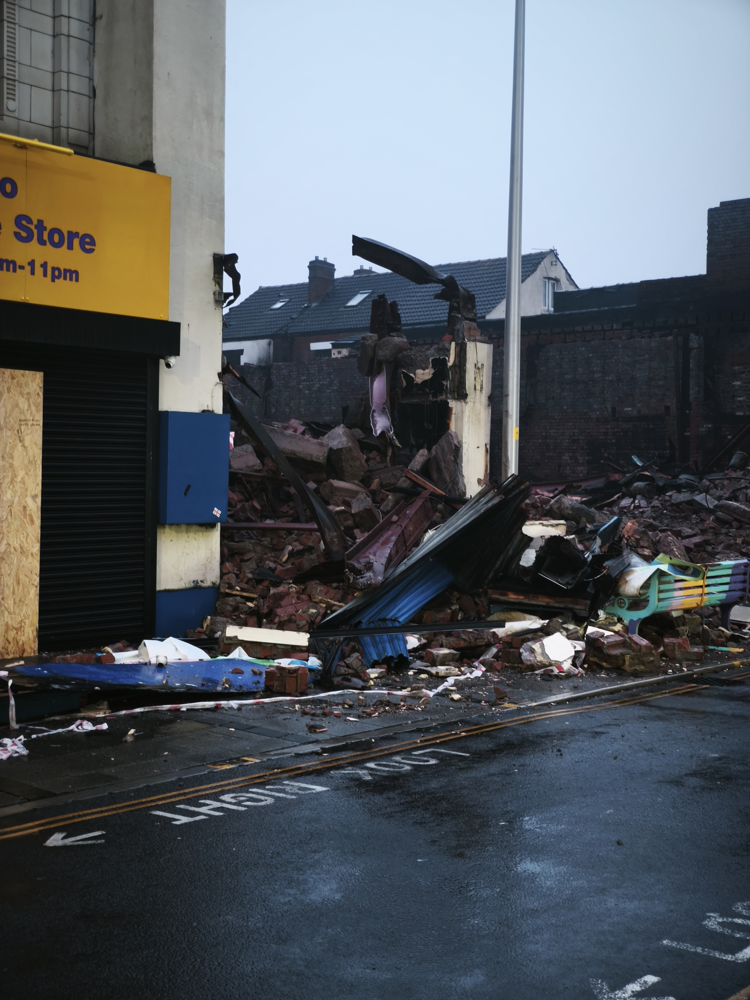
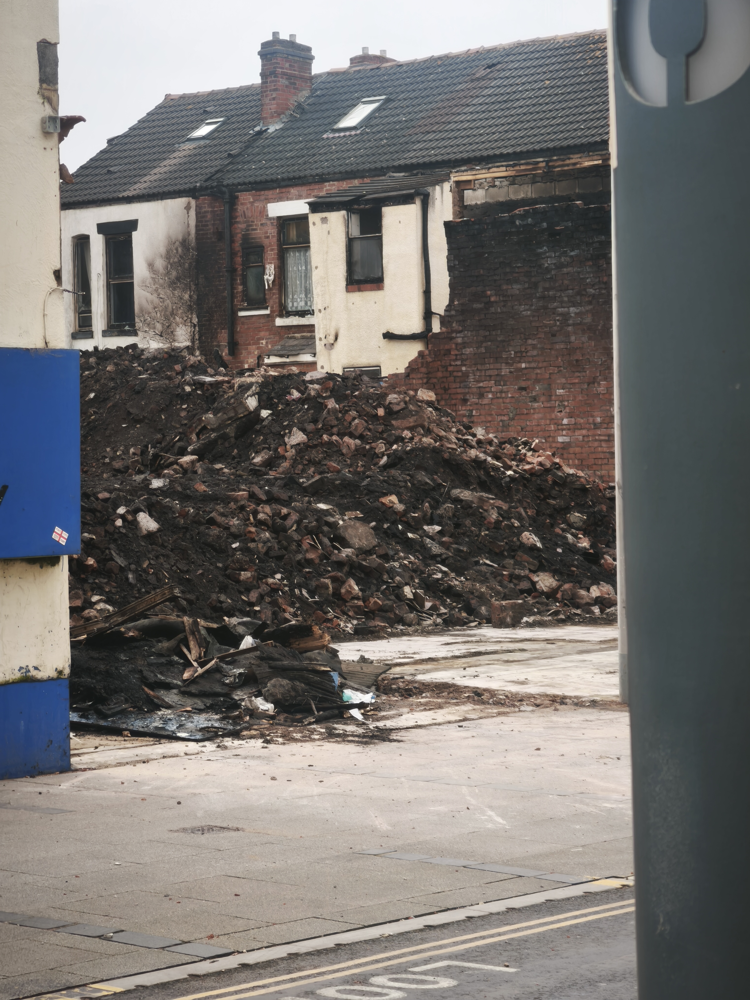

The Fire

The Incident
At 23:30 on Friday, February 6, 2026, the Lancashire Fire and Rescue Service (LFRS) logged a major commercial building fire on Waterloo Road in Blackpool's South Shore — incident number 2602002136.
The blaze broke out at the Smart Mart furniture store and the adjacent Smart Play indoor play centre at 29 Waterloo Road (FY4 1AD). The fire rapidly spread through the dense commercial block, producing thick black smoke that engulfed the surrounding neighbourhood. Waterloo Road was closed between Gordon Street and Moore Street.
As of the latest public reporting, police are not treating the fire as suspicious. The cause remains under investigation with no confirmed ignition source or origin point publicly identified. The site was handed to the council with the cause officially "yet to be determined."
The Response
The LFRS response was one of the largest in recent memory for the area:
In addition to the fire engines and aerial ladder platforms, LFRS deployed a Drone Unit and a Command Support Unit. Crews used six breathing apparatus sets and two ground monitors — indicating both interior firefighting and high-flow defensive operations were required. Even by February 8, six engines and a ladder platform remained at the scene. Cadent Gas attended to implement a temporary fix to the gas supply.
Mercifully, no injuries were reported.
- 23:30 LFRS logs fire
- Feb 7 Firefighting continues, evacuations
- Feb 8 6 engines still on scene
- Feb 10 Site handed to council
The Destruction

The fire devastated multiple businesses along Waterloo Road:
- Smart Play (29 Waterloo Road) — The indoor play centre was completely destroyed. Owners described themselves as "absolutely devastated."
- Smart Mart (29 Waterloo Road) — The furniture store where the fire is believed to have centred. Registered at Companies House as SMART MART (BLACKPOOL) LIMITED.
- South Shore Pitstop Community Café (21 Waterloo Road) — Described by locals as a "safe haven" for vulnerable residents. Decimated by the fire and forced to close for months, with staff out of work indefinitely.
- Omoto Caribbean Shop — Adjacent business impacted by the fire.
- Café Retro — Though not directly damaged by the fire, the café has been impacted by the displacement of its owner, a Gordon Street resident, and the resulting financial burden.
- Premier convenience store — Among additional businesses affected.

A number of residents from neighbouring Gordon Street were evacuated and displaced, supported initially by the council. The exact number of evacuated households has not been published in official records. Several families — particularly those at numbers 2, 4, and 6 Gordon Street, which back directly onto the fire site — remained unable to return home weeks later.
Demolition and Aftermath
From approximately February 11 onward, demolition crews were brought in to clear the fire-damaged structures. Chris Webb, the local MP, raised the incident with the government, linking it to broader regeneration plans for the South Shore area. Structural assessments were ongoing to determine next steps for the immediate surroundings.




Sources: LFRS Incident Log · ITV News · Central Radio · Central Radio (Feb 24) · Coastal Radio · Companies House · Chris Webb MP